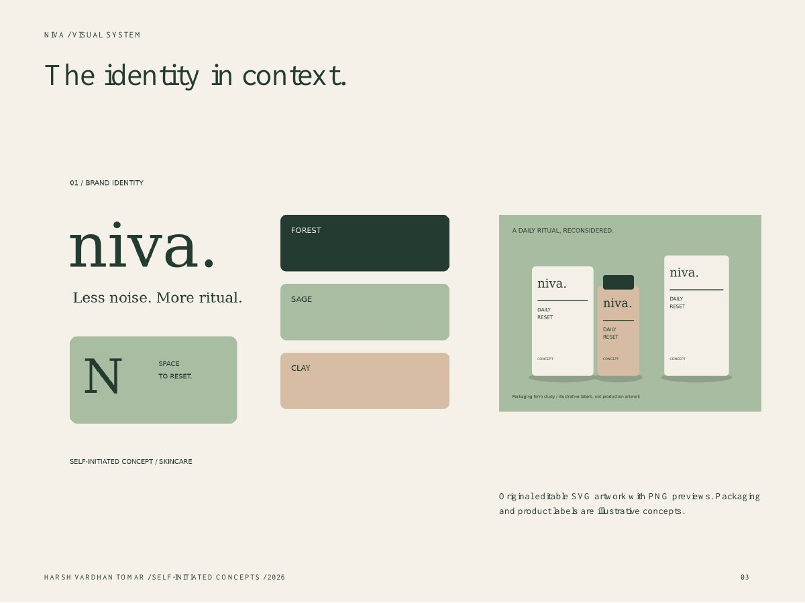
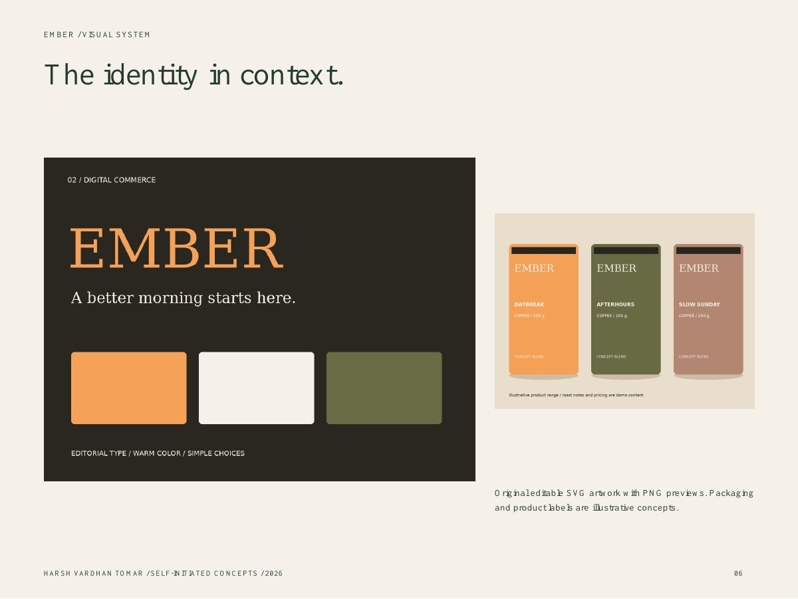
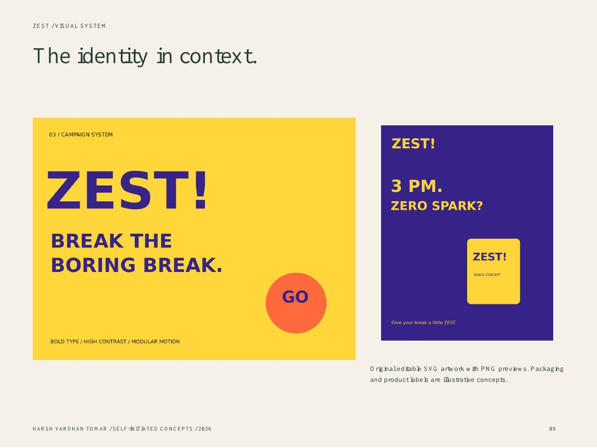

Harsh Vardhan Tomar / Selected concept work / 2026
Consumer brands,
clearly expressed.
Three self-initiated explorations in identity, digital commerce and campaign design—from the first visual idea to a working digital experience.
Brand identityPackaging conceptsResponsive webSocial + motion
niva.Less noise. More ritual.
Selected work / 01—03
Three concepts. Three systems.
Each case study connects a visual system to an audience hypothesis, a design objective and an execution plan.

01 / Brand identity + packaging
NIVA
Space to reset.
A quiet skincare identity built around one clear daily ritual. A lowercase serif wordmark and a forest, sage and clay palette bring calm structure to the shelf and the launch creative.
What I explored
- Identity board and recurring visual device
- Three packaging form studies and label hierarchy
- Social launch creative and editable vector artwork
Audience: working adults seeking a simple daily routine. This is a hypothesis; no customer interviews or live campaign measurement were performed.

02 / Website design + development
EMBER
Good coffee. Great mornings.
An editorial coffee storefront concept designed to make the first choice easier. Roast, pack size and tasting notes sit close to the product action, with cart feedback designed for a responsive journey.
What I explored
- Brand identity and coffee product range
- Responsive storefront layout and roast filtering
- Demo cart with quantity controls and clear status feedback
Audience: home coffee drinkers comparing blends. Products, prices and tasting notes are illustrative prototype content; no payments, orders or customer data are involved.

03 / Social strategy + motion
ZEST
Break the boring break.
A punchy fictional snack launch system that holds together across a feed and a reel. Oversized type, three solid colors and one pack silhouette adapt to feed and story formats.
What I explored
- Three-stage campaign: problem, idea, discovery
- Feed and story creative formats
- Nine-second silent reel, storyboard and test brief
Audience: students and early-career adults seeing snack brands on mobile. Break-time relevance is a creative hypothesis, not a research finding.
About this work
These are fictional, self-initiated concepts prepared for a visual design internship application. They demonstrate concept development and implementation; they do not represent paid client engagements. Created with AI assistance using HTML, CSS, JavaScript, original vector artwork and scripted motion. No client affiliation or measured business outcomes are claimed. Download the full application portfolio PDF ↗